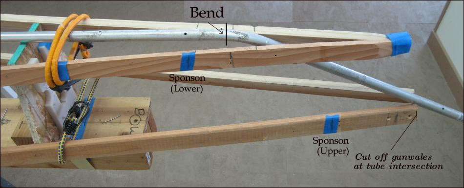

| Sonnet (Skinning Frame) | Menu Previous Page Next Page |
|

The keel transitions into the stems at a few inches ahead of the lower sponsons. The slope of the stems should pass a few inches ahead of the end of the upper sponson.A tube bender is used create the slope. The bow (shown) is generally a more shallow slope than the stern, though this is based on individual preference. If the slope you choose inteferes with the gunwales, cut them off (gunwales) just as they touch the aluminum stem.
|
|